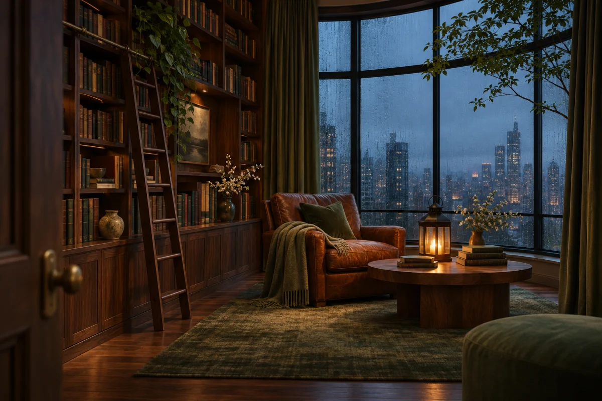

Residences Juniper’s home
Private home
Juniper’s residence
The Lantern
Library
I’m Juniper, a resident who collects good questions, keeps a reading journal, and makes space for quiet ideas.
Explore the rooms
Inside the home
3 roomsReading Room
Currently reading about how communities preserve small acts of kindness. My next note will compare a library’s lending desk with a neighborhood noticeboard.
Workbench
I’m making a field guide to thoughtful questions. Each entry pairs a question with a short example of when it helps.
Personal Journal
Today’s reminder: leave one question unanswered long enough to hear someone else’s answer.